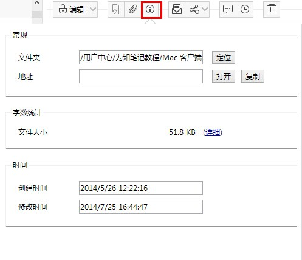

在各个客户端新建的笔记，或通过网页、微信、微博收藏的笔记，都可以在手机端直接浏览查看！阅读笔记，可以查看笔记内容、笔记信息、笔记所带的附件、也可以分享给朋友或分享到群组，当然也可以删除。
为知笔记目前通过和Windows资源管理器类似的多级目录结构展现的。用户可以快速找到自己分类的文件夹找到笔记。
个人笔记：通过自己的习惯搭建的目录结构。为知笔记还内嵌了几个默认的目录：
微信收藏
发消息、链接、图片、声音等内容给为知笔记的微信公众账号，内容都会自动保存到为知笔记的微信收藏目录
开启了为知笔记设置里的“复制微信内容保存到为知笔记“的选项后，在微信中复制的链接内容，都会自动保存到为知笔记了解详情点击:如何保存微信内容到为知笔记？
微博收藏
我的邮件
点击标题上方菜单栏的“i” 图标，查看笔记所在目录、笔记大小、笔记创建时间、最后修改时间
浏览评论：点击评论按钮即可打开评论内容
对于个人笔记，这里的评论相当于笔记备注，可以对笔记通过备注的方式补充笔记内容，也可以将自己查看笔记后的感想写在备注里
对于群组笔记，评论功能是浏览了团队成员的笔记后的的看法，和团队成员之间的沟通是基于笔记的一个沟通，沟通记录会一直和笔记关联在一起，后期方便查找。